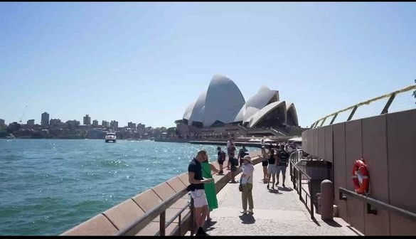

三组目的地范例，采用同样的 Day 时间线与 Chapter 阅读体验。每张照片都来自实际实验或人工标注素材。
从新宿御苑、浅草寺到涩谷与六本木，六段人工整理的春日城市故事。
6 CHAPTERS · 47 SELECTED PHOTOSBC 山谷草甸、林间野花与 Lightning Lake。可以切换 0s、10s、20s 三组。
3 OFFSETS · 49 SELECTED PHOTOS
六个偏移组、三种 VLM 路线与自动播放的真实 3 秒 Live 动态回忆。
129 CHAPTERS · 694 LIVE CLIPS